Appendix#
Vanishing Gradients#
Vanishing gradients occur when the gradients (partial derivatives of the loss function with respect to each weight) become very small as they propagate backward through a deep neural network during training.
This is particularly common in networks with many layers, making it difficult for the model to learn.
As gradients move backward from the output to the input layer, they can diminish exponentially, leading to the vanishing gradients problem.
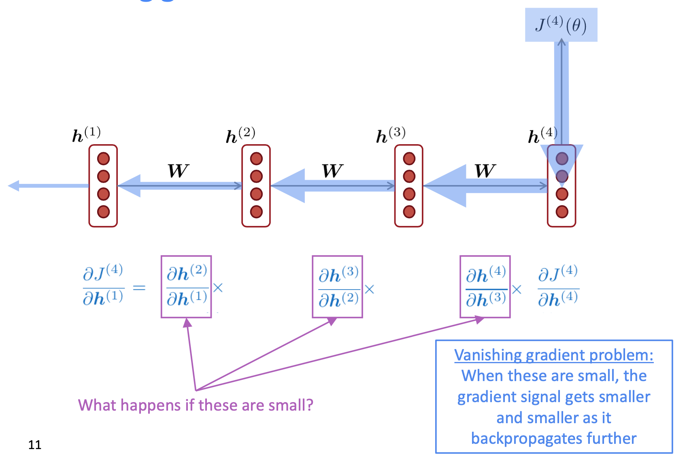{kind=link}
👉 In very deep networks, repeated multiplication of small gradients across layers causes the gradient to vanish as it propagates.
For example: \(\frac{J^{(4)}}{h^{(1)}} < \frac{J^{(4)}}{h^{(2)}} < \frac{J^{(4)}}{h^{(3)}} < \frac{J^{(4)}}{h^{(3)}}\). And more loops the training goes through, the longest distance gradients (weights far away from the J) tend to be vanishing as they approach 0.
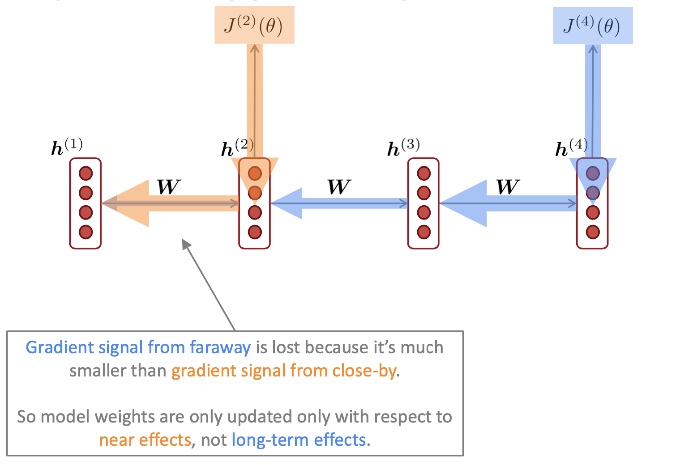{kind=link}
Because of vanishing gradients:
Slow or Stalled Learning: Layers receive very small updates, slowing down or halting learning altogether.
Difficulty in Capturing Long-Range Dependencies: The network struggles to learn relationships between distant elements, a key challenge in tasks like language modeling.
Too long a sequence. This is a major problem because for a vanilla RNN (the RNN introudced so far, the state is constantly updated in each time step, which makes it impossible or hardly possible for the model to preserve long-distance dependency. In other word, the longer distance a piece of info is, the harder it will be kept in the model.
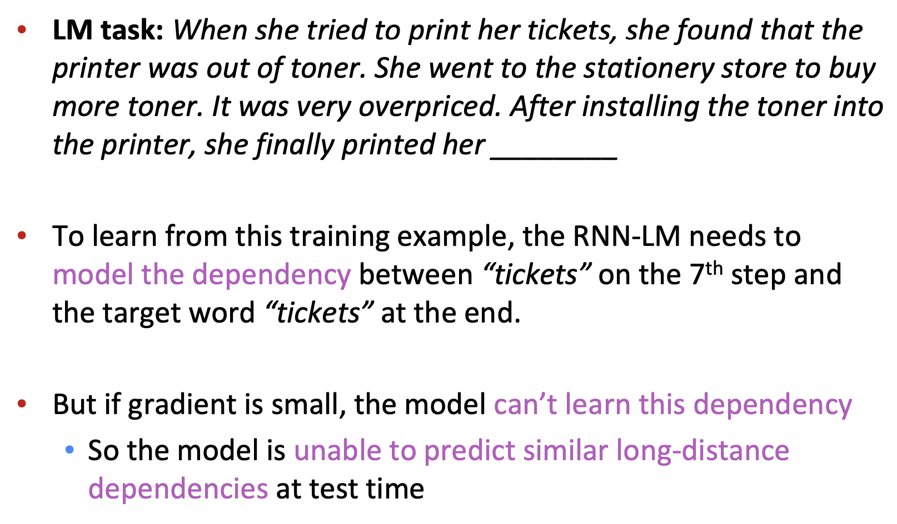{kind=link}
Exploding Gradient#
Exploding gradients refer to a problem in the training of deep neural networks where the gradients (partial derivatives of the loss function with respect to each weight) become excessively large. This causes unstable updates to the network’s weights, leading to erratic behavior during training.
Similar to the vanishing gradients problem, exploding gradients occur during the backpropagation process, where gradients are propagated from the output layer back to the input layer to update the network’s weights.
Unlike vanishing gradients, which cause gradients to become too small, exploding gradients cause them to become excessively large, often leading to numerical instability.
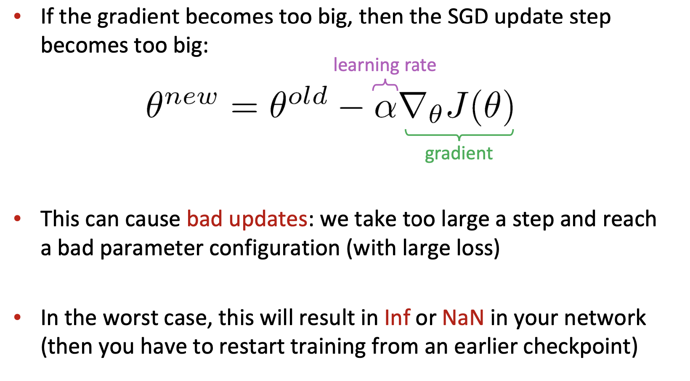{kind=link}
Because of Exploding Gradient we can face:
Numerical Instability: Extremely large gradients can cause numerical issues, such as overflow, resulting in
NaN(Not a Number) values in the network’s parameters.Diverging Loss: Instead of minimizing the loss function, the network’s loss may increase uncontrollably, preventing the model from learning effectively.
Oscillating Weights: Weight updates can become so large that the network oscillates around the minimum of the loss function without converging.
To solve the problem of exploding gradient, we can use different techniques
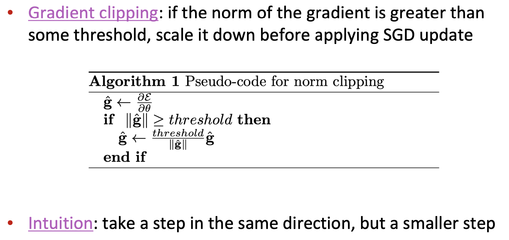 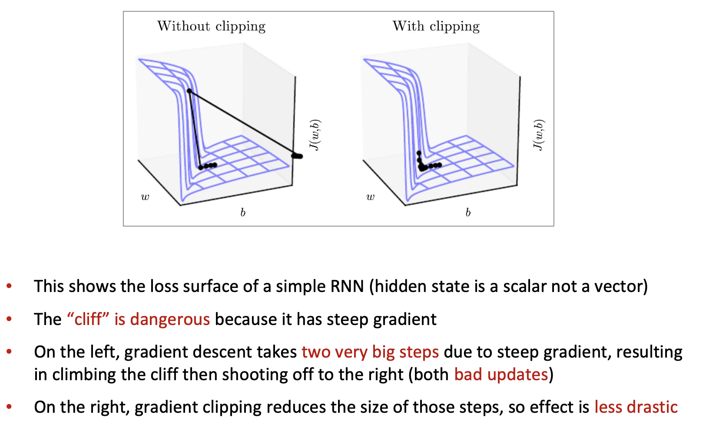{kind=link}
{kind=link}
👉 Can also employ more sophisticated optimizers, like Adam, Adagrad, RMSprop etc., to overcome the exploding gradients.
General solutions to vanishing/exploding gradient#
Obviously, vanishing/exploding gradient is a program that is not only relevant for RNN, but for all NN (including feed-forward and convolutional), especially deep ones. Although, for RNN, these problems are more serious due to the design of RNN (i.e., the repeated multiplication by the same weight matrix).
See: ”Learning Long-Term Dependencies with Gradient Descent is Difficult”, Bengio et al. 1994, http://ai.dinfo.unifi.it/paolo//ps/tnn-94-gradient.pdf.
Causes and solutions:
Due to chain rule / choice of nonlinearity function, gradient can become vanishingly small as it backpropagates
Thus lower layers are learnt very slowly (hard to train)
Solution: lots of new deep feedforward/convolutional architectures that add more direct connections (thus allowing the gradient to flow)
Residual connections#
Reference: He et al.2015. Deep Residual Learning for Image Recognition.
This is a very general trick
{kind=link}
Dense connections#
Reference: ”Densely Connected Convolutional Networks”, Huang et al, 2017. https://arxiv.org/pdf/1608.06993.pdf
This is more specific to CNN
{kind=link}
Highway connections#
Reference: ”Highway Networks”, Srivastava et al, 2015. https://arxiv.org/pdf/1505.00387.pdf
Highway connections aka “HighwayNet”
Similar to residual connections, but the identity connection vs the transformation layer is controlled by a dynamic gate
Inspired by LSTMs, but applied to deep feedforward/convolutional networks
Long Short-Term Memory (LSTM)#
Reference: Hochreiter and Schmidhuber, 1997. “Long short-term memory”.
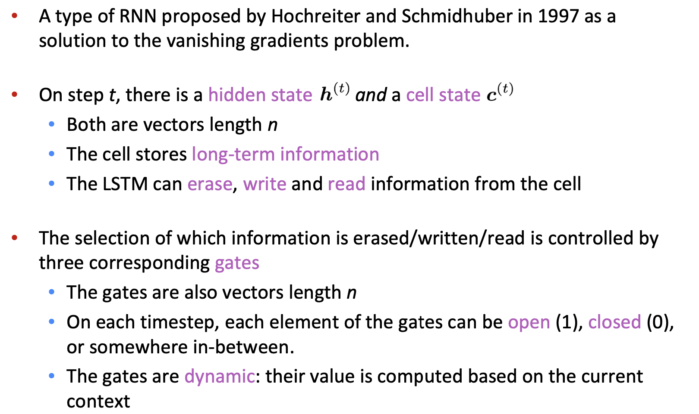{kind=link}
👉 Forget gate is similar to the idea of Dropout in Deep Neural Network, an intuitive trick to reduce the risk of Vanishing Gradient.
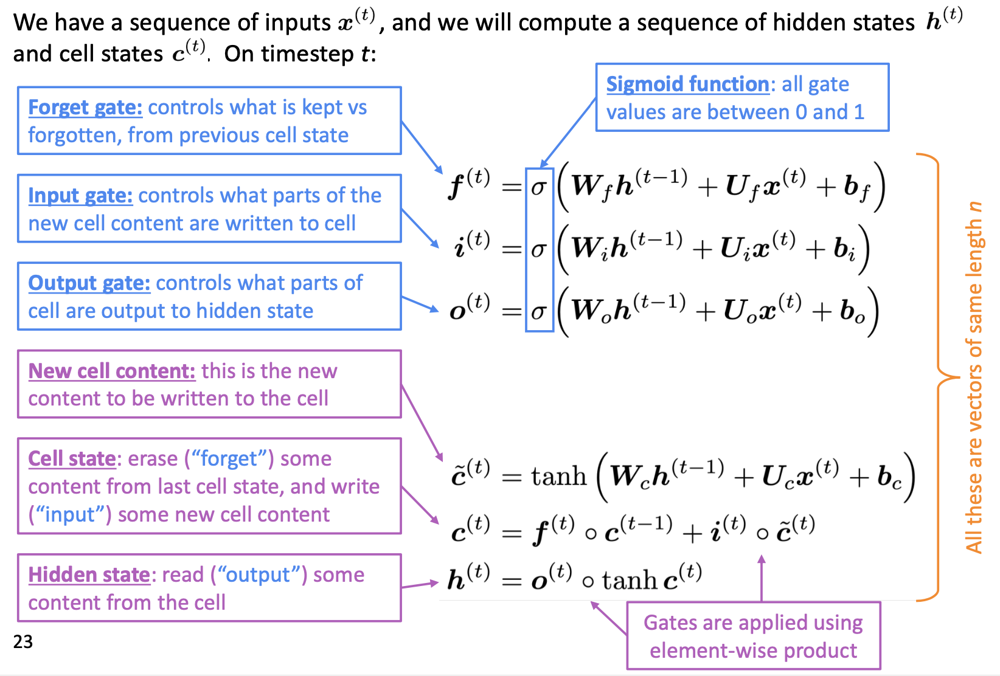 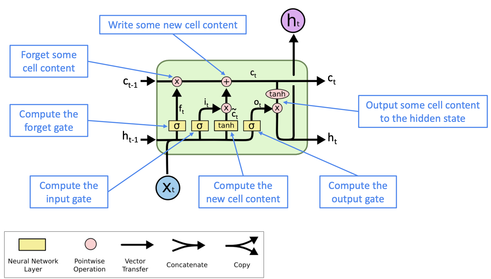{kind=link}
Gated Recurrent Units (GRU)#
Reference: “Learning Phrase Representations using RNN Encoder–Decoder for Statistical Machine Translation”, Cho et al. 2014, https://arxiv.org/pdf/1406.1078v3.pdf
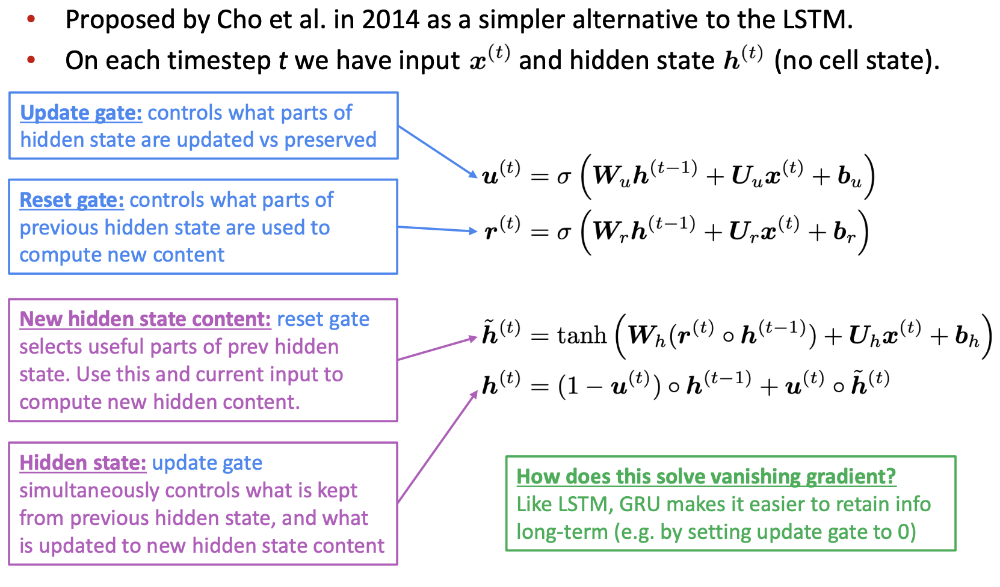{kind=link}
LSTM vs GRU#
👉 Researchers have proposed many gated RNN variants, but LSTM and GRU are the most widely-used
👉 The biggest difference is that GRU is quicker to compute and has fewer parameters
👉 There is no conclusive evidence that one consistently performs better than the other
👉 LSTM is a good default choice (especially if your data has particularly long dependencies, or you have lots of training data)
👉 Rule of thumb: start with LSTM, but switch to GRU if you want something more efficient
Bidirectional RNNs#
Contextual representation
👉 Look for both directions
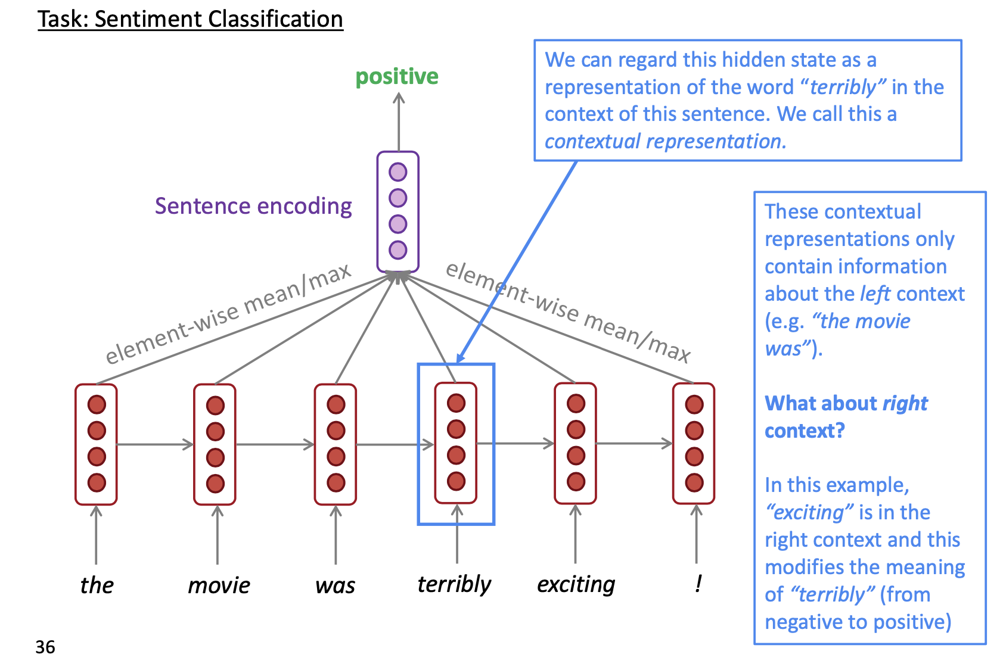{kind=link}
Structure#
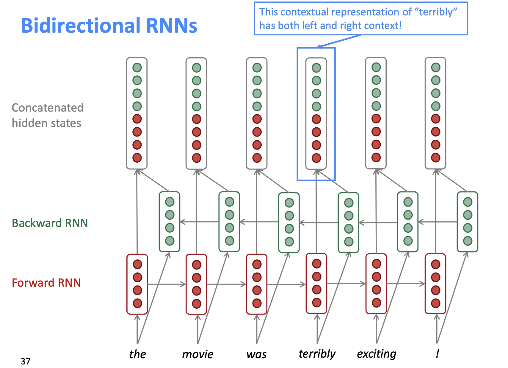 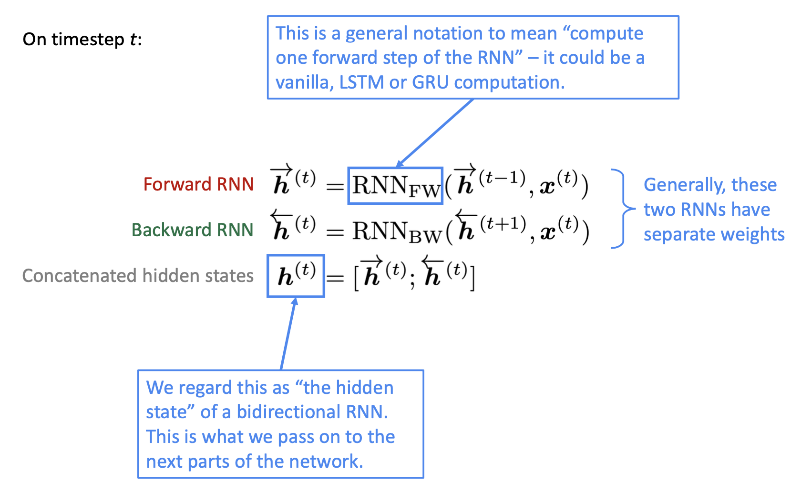 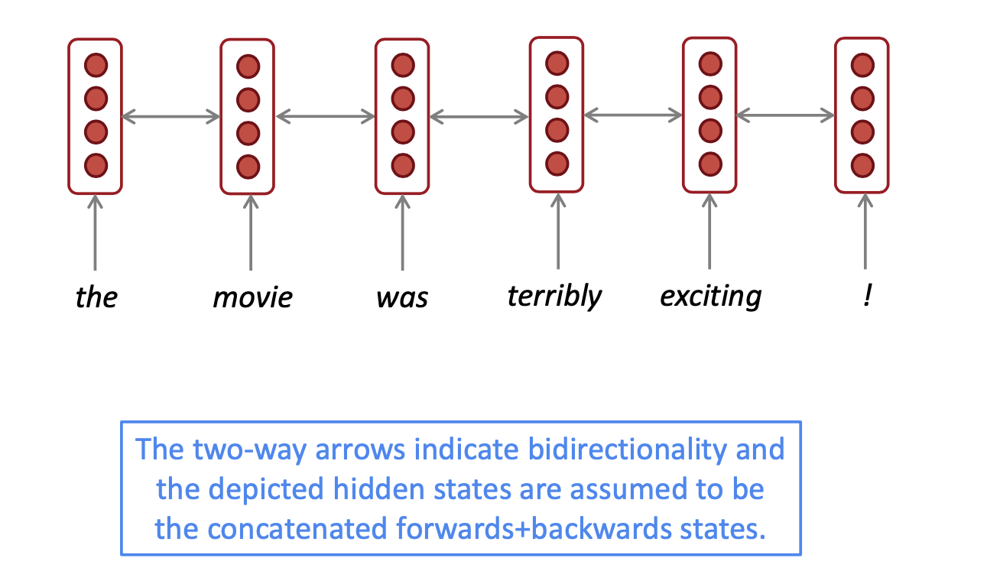{kind=link}
{kind=link}
{kind=link}
Restrictions#
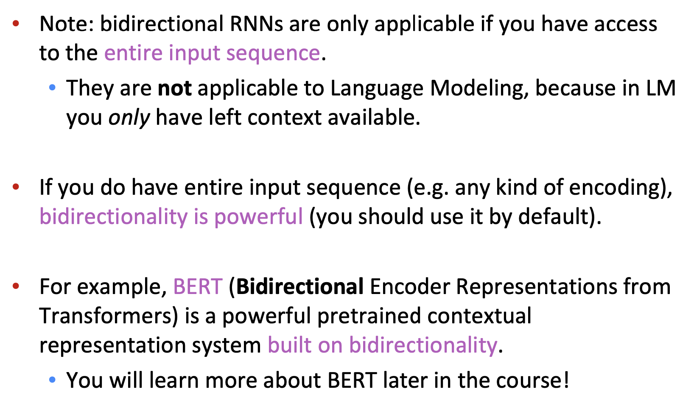{kind=link}
Multi-layer RNNs (Stacked)#
👉 RNNs are already “deep” on one dimension (they unroll over many timesteps)
👉 We can also make them “deep” in another dimension by applying multiple RNNs – this is a multi-layer RNN.
👉 This allows the network to compute more complex representations
👉 The lower RNNs should compute lower-level features and the higher RNNs should compute higher-level features.
👉 Multi-layer RNNs are also called stacked RNNs.
👉 This can be bidirectional provided that the entire input sentence is accessible.
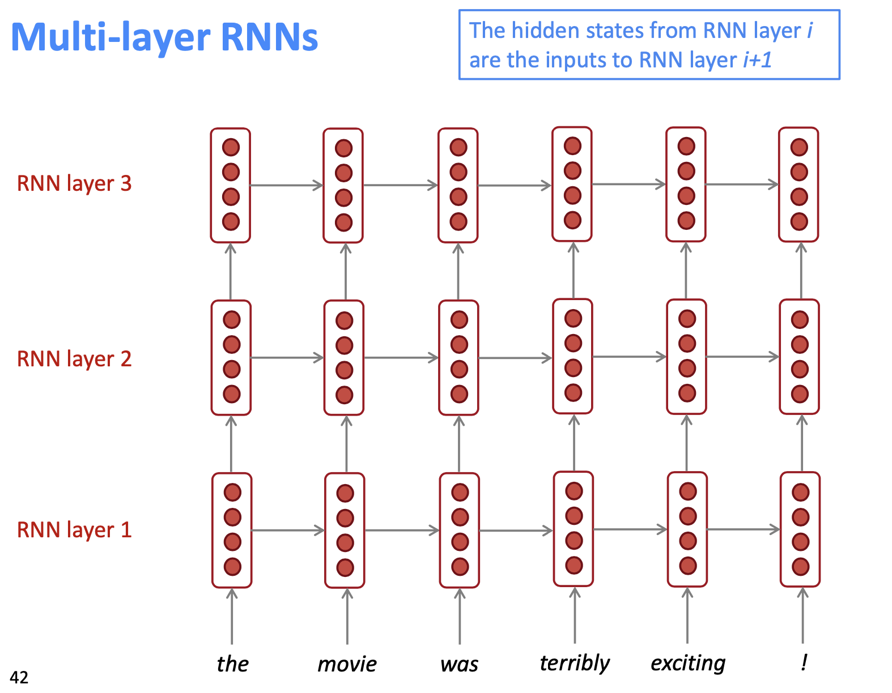{kind=link}
In practice#
Reference: “Massive Exploration of Neural Machine Translation Architecutres”, Britz et al, 2017. https://arxiv.org/pdf/1703.03906.pdf
👉 Skips are usually heavily used.
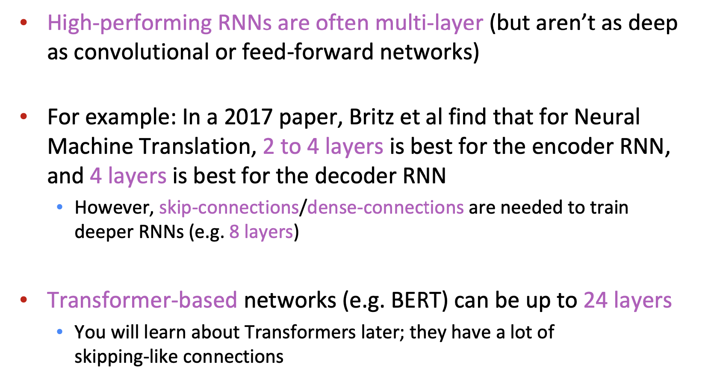{kind=link}
T5 Models#
Text-to-Text Transfer Transformer (T5) is a large language model (LLM). A lot of people are working in this field and it’s difficult to see who’s methods are doing better if so many variables are changing. This paper was on seeing how far they could take the current tools available.
In the paper they built their own dataset (c4, available on TensorFlow) to test how pretraining helps.
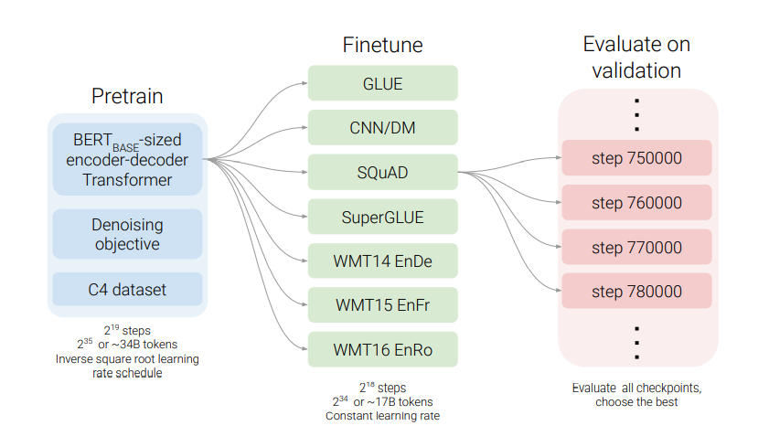
Figure 1. T5 pipeline.